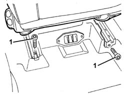
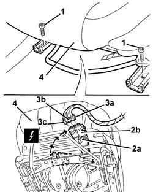
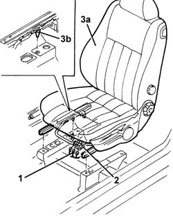
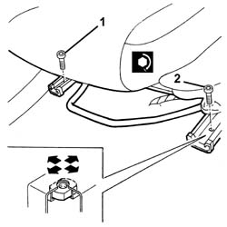
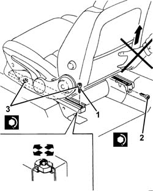

7045A10 L/H OR R/H FRONT SEAT (ONE) - R+R
- Path
- Procedures > 70 FITTINGS > 7045 FRONT SEATS > 7045A FRONT SEAT ASSEMBLY > 7045A10 L/H OR R/H FRONT SEAT (ONE) - R+R
- Kind
- repair procedure (removal / refitting; the operation number is the code)
- Applies to
- all engines; all production periods
- Interactive page
- https://sloeber94.github.io/elrnDB-aGt/en/#/125001900
Applies to: engines: 1.8 T.SPARK; all production periods
Applies to: all engines; all production periods
 Removing
Removing
 Refitting
RefittingLift the seat at the end of its travel.
1. Move the seat fully forward and undo the rear bolts.

Applies to: all engines; all production periods
1. Move the seat fully back and undo the front bolts.
2. Raise the seat slightly, undo retainer (2a) and turn connector carrier bracket (2b) until it is accessible.
3. Disconnect the electrical connections (3a, 3b, 3c).
Name | Connector | |
|---|---|---|
3a | Driver's Side Bag | See Q30 DRIVER'S SIDE BAG ( REAR ) |
Name | Connector | |
|---|---|---|
3a | Passenger Side Bag | See Q31 PASSENGER SIDE BAG ( REAR ) |
Name | Connector | |
|---|---|---|
3b | Driver's seat coupling | See D70 DRIVER'S SEAT COUPLING ( REAR ) |
Name | Connector | |
|---|---|---|
3b | Passenger seat coupling | See D71 RIGHT SEAT CONNECTION |
Name | Connector | |
|---|---|---|
3c | Seat belts warning light switch | See I45 SEAT BELTS WARNING LIGHT SWITCH |
4. Remove the seat.

Applies to: all engines; all production periods
Refitting
RemovingCheck that the seat is undamaged.
1. Connect the electrical connections .
2. Turn connector carrier bracket (2a) in its seat and do up retainer (2b).
3. Place the seat (3a) in its housing on the floor of the vehicle. Ensure it is fully back on the guides and engage locating pin (2b).

Applies to: all engines; all production periods
1. Screw on and tighten the inner front bolt.
 | Fastening | Component | Ø | Value (daNm) |
|---|---|---|---|---|
1 | Bolt | FRONT SEAT ASSEMBLY. | M8 | 2.4 |
2. Screw on and tighten the outer front bolt.
| Fastening | Component | Ø | Value (daNm) |
|---|---|---|---|---|
2 | Bolt | FRONT SEAT ASSEMBLY. | M8 | 2.4 |

Applies to: all engines; all production periods
Slide the seat fully forward. Make sure that the elements for both guides engage simultaneously.
1. Screw on and tighten the outer rear bolt.
| Fastening | Component | Ø | Value (daNm) |
|---|---|---|---|---|
1 | Bolt | FRONT SEAT ASSEMBLY. | M8 | 2.4 |
2. Screw on and tighten the inner rear bolt.
| Fastening | Component | Ø | Value (daNm) |
|---|---|---|---|---|
2 | Bolt | FRONT SEAT ASSEMBLY. | M8 | 2.4 |
3. Check that the seat slides correctly. If there is longitudinal clearance for the guide attachment, loosen the door side bolts, slide and attach the seat several times, then tighten the bolts to the recommended torque.

Applies to: all engines; all production periods
Check that the seat slides correctly and that the seat belt unfastened warning light comes on properly.
Topics linked from this page (1)
Topics that link to this page (31)
- O01 FRONT SEAT SLIDING NOT WORKING
- S65 SEATS CREAKING
- 5010B56 DUCT BETWEEN CLIMATE CONTROL SYSTEM HOUSING AND AIR DUCT TO REAR SEATS R R
- 5040A80 EXPANSION/CONNECTION PIPE - R R
- 5040B30 EXPANSION VALVE (TUBE ORIFICE) - R+R
- 5040C15 AIR CONDITIONER HOUSING - R R WITH FACIA DISCONNECTED FOR VERSIONS WITH PASSENGER AIRBAG
- 5040C50 AIR CONDITIONER HEATER RADIATOR - R+R
- 5040C64 A/C MANUAL CONTROL SWITCH (ONE) - R+R
- 5040D90 AIR CONDITIONER SYSTEM WIRING BUNDLE - R R
- 5505C34 INTERGRATED INSTRUMENT UNDER FACIA FRONT AIR BAG WIRING - R R
- 5505C41 CABIN WIRING - R R
- 7040A97 FACIA TRIM SUPPORT BEAM - R R
- 7040L10 CABIN FLOOR CARPET - R R
- 7040L13 PASSENGER COMPARTMENT FLOOR SOUNDPROOFING - R R
- 7045A29 SEAT SLIDE CONTROL LEVER - R R
- 7045A44 SEAT INTERIOR GUARD - R R
- 7045A60 FRONT SEAT LIFT DEVICE - R R
- 7045A71 FRONT SEAT SUPPORT/GUIDE - DRIVER`S SIDE WITH LIFT DEVICE - R R
- 7045A73 FRONT SEAT MOUNT/GUIDE - PASSENGER`S SIDE R R
- 7045A85 R R HANDLE FOR FRONT SEAT FORE AND AFT ADJUSTMENT
- 7045A87 R R HANDLE FOR FRONT SEAT FORE AND AFT ADJUSTMENT
- 7045A89 R R HANDLE FOR FRONT SEAT FORE AND AFT ADJUSTMENT
- 7045A91 R R HANDLE FOR FRONT SEAT FORE AND AFT ADJUSTMENT
- 7045A93 R R HANDLE FOR FRONT SEAT FORE AND AFT ADJUSTMENT
- 7045B10 L/H OR R/H FRONT SEAT HEAD RESTRAINT - R+R
- 7045L30 BACKREST FOLDING CONTROL CABLE/ROD - R.R.
- 7045M22 L/H OR R/H FRONT SEAT CUSHION HEAT PAD - R+R FOLLOWING ELECTRICAL WIRING CHECK
- 7045M26 L/H OR R/H FRONT SEAT SQUAB HEAT PAD - R+R FOLLOWING ELECTRICAL WIRING CHECK
- 7065A14 ANCHORAGE ROD FOR , (ONE), FRONT SEAT BELT LEFT OR RIGHT - R.R.
- 7065C72 FRONT CIGAR LIGHTER SOCKET/POWER POINT - FASTEN
- 7065C73 CIGAR LIGHTER BULB - R R - INCLUDES R R CIGAR LIGHTER